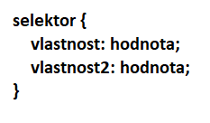

CSS - Cascading Style Sheets
Popisuje jak budou HTML elementy vizuálně zobrazeny na stránce
Tyto zápisy se můžou psát do tagu <style>, který se píše do tagu <head>
Upřednostněný způsob zápisu je do externího souboru s koncovkou .css (popřípadě jiné možné varianty)
Pro zápis nějakého CSS pravidla platí následující syntax:
Editor
Pro živou ukázku je CSS a JavaScript vepsaný přímo v dokumentu - v praxi tyto soubory vždy oddělujte do externích souborů
<!DOCTYPE html>
<html>
<head>
<style>
p {
color: red;
}
</style>
<!-- Propojeni externiho souboru - href odkazuje na URL k souboru -->
<link href="../cesta/k/css/souboru/style.css" rel="stylesheet" type="text/css">
</head>
<body>
<p>Ahoj svete</p>
</body>
</html>